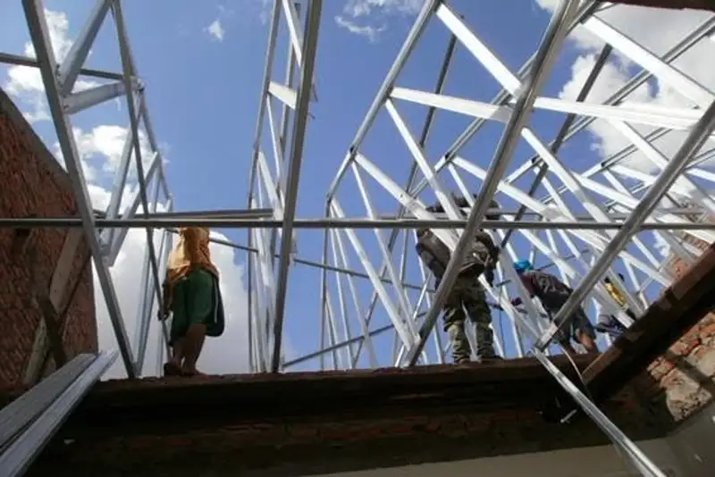

Daftar Isi
- Apa Itu Jasa Bongkar Atap Kayu ke Baja Ringan?
- Kapan Atap Kayu Perlu Diganti ke Baja Ringan?
- Bagaimana Proses Bongkar Atap Kayu ke Baja Ringan Dilakukan?
- Berapa Biaya Jasa Bongkar Atap Kayu ke Baja Ringan?
- Apa Kelebihan Baja Ringan Dibanding Kayu untuk Rangka Atap?
- Apa Saja Kesalahan Umum Saat Bongkar Atap Kayu ke Baja Ringan?
- Tips Memilih Jasa Bongkar Atap Kayu ke Baja Ringan yang Tepat
- FAQ
Jasa bongkar atap kayu ke baja ringan adalah layanan profesional untuk membongkar rangka atap kayu lama dan menggantinya dengan rangka baja ringan yang lebih tahan lama, ringan, dan minim risiko rayap.
- Rangka baja ringan lebih tahan rayap dan tidak mudah lapuk dibanding kayu.
- Proses bongkar-pasang umumnya memerlukan waktu beberapa hari tergantung luas atap.
- Biaya dipengaruhi luas bangunan, tingkat kesulitan akses, dan jenis genteng yang dipakai ulang.
- Pemilihan jasa yang berpengalaman mengurangi risiko kebocoran dan kerusakan plafon.
- Perencanaan yang matang membantu menghindari pembengkakan biaya di tengah proyek.
Apa Itu Jasa Bongkar Atap Kayu ke Baja Ringan?
Jasa bongkar atap kayu ke baja ringan mencakup pembongkaran rangka kuda-kuda kayu, penggantian dengan rangka baja ringan galvanis atau zincalume, serta pemasangan ulang penutup atap seperti genteng atau metal. Layanan ini berbeda dari sekadar perbaikan atap karena mengganti keseluruhan struktur penopang.
Rangka kayu yang sudah berusia puluhan tahun umumnya mulai menunjukkan tanda kelelahan struktural, seperti lapuk, dimakan rayap, atau melengkung akibat beban genteng dalam jangka panjang. Mengganti rangka kayu dengan baja ringan menjadi solusi umum karena bobotnya yang lebih ringan sehingga mengurangi beban pada dinding dan pondasi rumah.
Kapan Atap Kayu Perlu Diganti ke Baja Ringan?
Atap kayu sebaiknya dipertimbangkan untuk diganti ke baja ringan ketika muncul tanda kerusakan struktural yang dapat membahayakan penghuni rumah.
Beberapa tanda umum yang sering dijadikan acuan meliputi:
- Terlihat lubang bekas gigitan rayap pada kayu kuda-kuda.
- Rangka kayu tampak melengkung atau menurun di bagian tengah.
- Genteng sering bergeser meski sudah diperbaiki berulang kali.
- Muncul bau lembap atau jamur di area plafon secara terus-menerus.
- Usia rangka kayu sudah melewati masa pakai wajar, umumnya di atas 15-20 tahun tergantung kondisi perawatan.
Bagaimana Proses Bongkar Atap Kayu ke Baja Ringan Dilakukan?
Proses bongkar atap kayu ke baja ringan umumnya dilakukan secara bertahap agar rumah tetap terlindungi dari cuaca selama pengerjaan berlangsung.
Tahapan yang umum dilakukan meliputi:
- Survei kondisi rangka kayu dan pengukuran luas atap.
- Pembongkaran genteng dan penyortiran genteng yang masih layak dipakai ulang.
- Pembongkaran rangka kayu lama secara bertahap per bagian.
- Pemasangan rangka baja ringan baru sesuai desain kuda-kuda.
- Pemasangan kembali penutup atap dan pengecekan kerapatan sambungan.
- Pembersihan area kerja dan pengecekan akhir kebocoran.
Menurut praktik umum industri konstruksi di Indonesia, durasi pengerjaan untuk rumah tipe menengah biasanya berkisar 3-7 hari kerja, tergantung cuaca dan kompleksitas desain atap (Sumber: praktik umum kontraktor renovasi, 2025).
Berapa Biaya Jasa Bongkar Atap Kayu ke Baja Ringan?
Biaya jasa bongkar atap kayu ke baja ringan bervariasi tergantung luas atap, tingkat kerumitan bentuk atap, dan apakah genteng lama masih dapat dipakai ulang.
Komponen biaya yang umumnya diperhitungkan:
- Biaya bongkar rangka kayu lama dan pembuangan material.
- Biaya material baja ringan, termasuk kaso dan reng.
- Biaya jasa pemasangan per meter persegi.
- Biaya tambahan bila genteng perlu diganti baru.
- Biaya mobilisasi alat untuk bangunan bertingkat atau akses sulit.
Karena harga material dan upah tenaga kerja berbeda di tiap daerah, disarankan meminta beberapa penawaran tertulis dari jasa yang berbeda sebelum menentukan pilihan, agar anggaran dapat dibandingkan secara adil.
Apa Kelebihan Baja Ringan Dibanding Kayu untuk Rangka Atap?
Baja ringan menawarkan sejumlah keunggulan dibanding kayu, terutama dari sisi ketahanan terhadap organisme perusak dan bobot struktur.
Kelebihan yang umum disebutkan:
- Tidak dimakan rayap karena berbahan logam berlapis anti karat.
- Bobot lebih ringan sehingga mengurangi beban struktur dinding.
- Proses pemasangan relatif lebih cepat karena komponen presisi pabrikan.
- Lebih tahan terhadap perubahan cuaca ekstrem dibanding kayu yang bisa memuai atau menyusut.
Meski begitu, baja ringan juga memiliki keterbatasan, seperti kebutuhan desain yang presisi dan potensi karat bila kualitas lapisan galvanis rendah atau terjadi kesalahan pemasangan yang merusak lapisan pelindung.
Apa Saja Kesalahan Umum Saat Bongkar Atap Kayu ke Baja Ringan?
Kesalahan dalam proses bongkar-pasang atap dapat menyebabkan kebocoran, struktur tidak rata, atau pemborosan biaya.
Kesalahan yang sering terjadi antara lain:
- Tidak melakukan survei menyeluruh sebelum membongkar, sehingga estimasi biaya meleset.
- Menggunakan baja ringan dengan ketebalan di bawah standar demi menekan harga.
- Mengabaikan perlindungan sementara saat proses bongkar berlangsung, sehingga rumah berisiko kebanjiran saat hujan.
- Tidak memeriksa kerataan rangka sebelum genteng dipasang kembali, yang berujung pada genteng bocor atau bergeser.
Tips Memilih Jasa Bongkar Atap Kayu ke Baja Ringan yang Tepat
Memilih jasa yang tepat dapat meminimalkan risiko kerusakan dan memastikan hasil pekerjaan tahan lama.
Beberapa hal yang perlu diperhatikan:
- Minta portofolio pekerjaan sejenis yang pernah dikerjakan sebelumnya.
- Pastikan jasa memberikan estimasi tertulis yang rinci, bukan hanya lisan.
- Tanyakan jenis dan ketebalan baja ringan yang akan digunakan.
- Periksa apakah ada garansi pekerjaan setelah proyek selesai.
- Baca ulasan atau minta referensi dari klien sebelumnya bila memungkinkan.